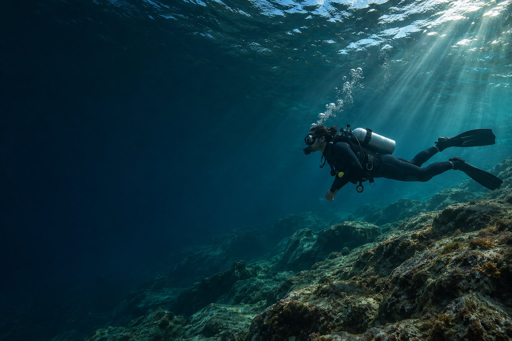
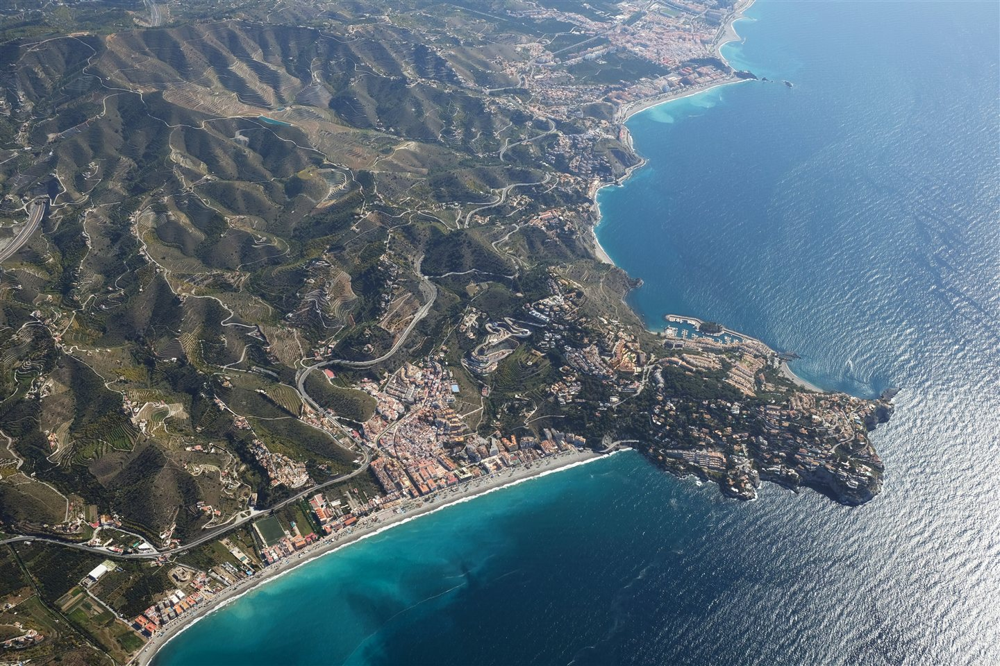

Bautismo de buceo
Prueba el equipo y descubre cómo se siente respirar bajo el agua con el acompañamiento de un instructor.
Consultar bautismos
Escuela de buceo · Sevilla
Bautismos, cursos FEDAS–CMAS e inmersiones en La Herradura, Granada.
Explorar actividadesActividades
Da tus primeras aletadas, fórmate o vuelve al agua con tu titulación.
Prueba el equipo y descubre cómo se siente respirar bajo el agua con el acompañamiento de un instructor.
Consultar bautismosFórmate en los niveles de 1, 2 y 3 estrellas o amplía tu experiencia con especialidades como navegación, nitrox y buceo nocturno.
Ver el plan de formaciónSi ya tienes titulación, acompáñanos a explorar los fondos de La Herradura. Organizamos salidas desde tierra o embarcación.
Consultar salidasFEDAS–CMAS
B1E · Iniciación
Titulación de iniciación al buceo deportivo con certificado internacional CMAS. Incluye formación teórica y prácticas en el agua.
Edad mínima: 14 años. El programa Buceador Junior tiene su propia titulación y admite participantes desde los 12 años.
Atribuciones del B1E: hasta 25 m sin descompresión tras completar las 20 inmersiones de prácticas registradas, dentro de los límites aplicables por edad y normativa.
B2E · Avanzado
Formación avanzada para realizar y liderar inmersiones en grupo dentro de los límites de titulación y edad de sus integrantes.
Acceso: desde los 16 años, con B1E, 20 inmersiones acreditadas y la especialidad de soporte vital básico.
B3E · Perfeccionamiento
Formación para planificar, organizar y dirigir inmersiones, incluidas las que requieren descompresión dentro de las atribuciones de la titulación. También prepara para colaborar como buceador de seguridad en cursos FEDAS.
Acceso: desde los 16 años, con B2E, 50 inmersiones registradas y la especialidad de administración de oxígeno.
Formación
Consulta la semana de curso de cada mes. Las fechas van de lunes a domingo.

Costa Tropical · Granada
Entre acantilados y fondos rocosos del Mediterráneo hacemos los bautismos, las prácticas en mar y las salidas para buceadores titulados.
Contamos con el apoyo del Centro de Buceo La Herradura, en el puerto deportivo de Marina del Este, en Almuñécar.
Ver Marina del EsteFotos de actividades
Álbumes de cursos, bautismos y salidas de Buceo Arquímedes.
Cargando álbumes…
La escuela
Nacimos en Sevilla en 1992 como club deportivo. En 2027 se cumplen 35 años desde la fundación de Buceo Arquímedes.
El club dio sus primeros pasos con el apoyo de Celia Nebot, al frente de Náutica Sun Sail, y de Manolo Manzanares, cuya experiencia ayudó a dirigir los primeros cursos de Buceador 1 estrella.
Desde entonces, hemos acompañado a miles de personas, desde sus primeras inmersiones hasta las especialidades avanzadas. Seguimos formando a buceadores con atención a la seguridad, al compañerismo y al respeto por el medio marino.
Conoce al equipoContacto
Escríbenos o llama a administración para consultar fechas, requisitos y disponibilidad.